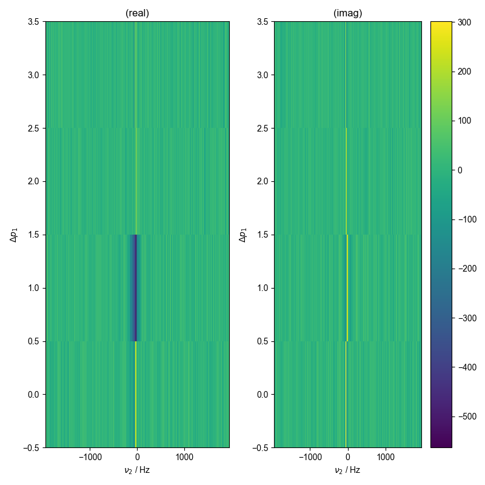
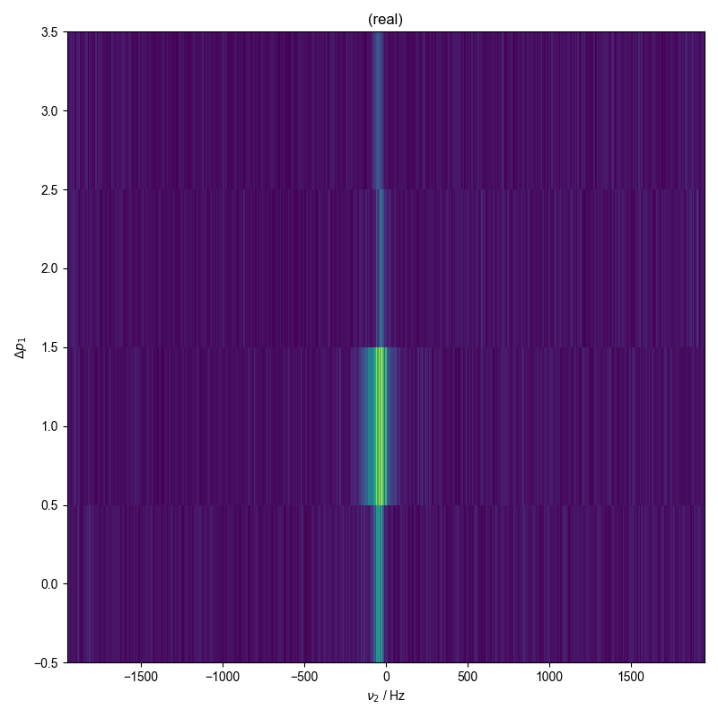
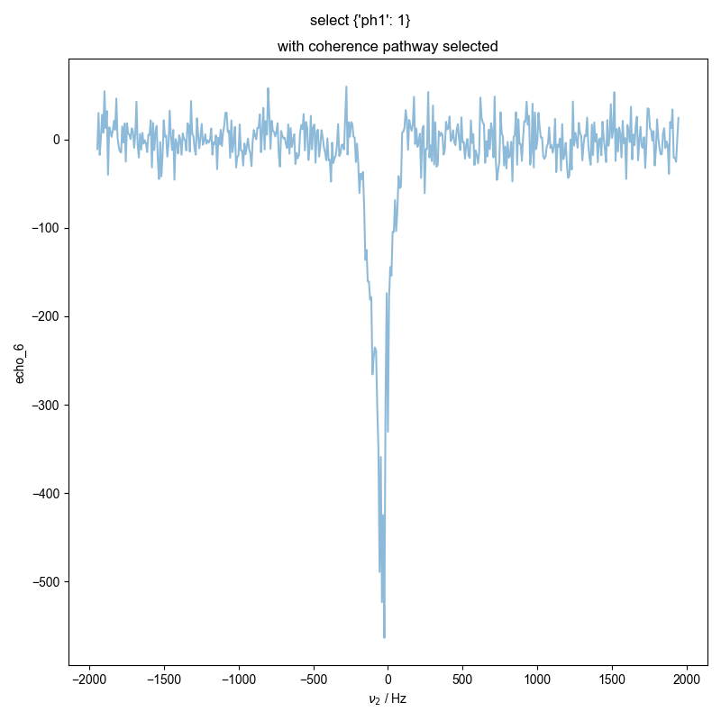

Note
Go to the end to download the full example code
Show data with postproc¶
py proc_raw_data.py NODENAME FILENAME EXP_TYPE
Fourier transforms (and any needed data corrections for older data) are performed according to the postproc_type attribute of the data node. This script plots the result, as well as signal that’s averaged along the nScans dimension.
Tested with:
py proc_raw.py echo_6 240620_200uM_TEMPOL_pm_echo.h5 ODNP_NMR_comp/Echoes
py proc_raw.py echo_8 240620_200uM_TEMPOL_pm_generic_echo.h5 ODNP_NMR_comp/Echoes
py proc_raw.py CPMG_9 240620_200uM_TEMPOL_pm_generic_CPMG.h5 ODNP_NMR_comp/Echoes
py proc_raw.py field_3 240920_27mM_TEMPOL_debug_field ODNP_NMR_comp/field_dependent
py proc_raw.py ODNP K42.*A1_kRasbatch240814 ODNP_NMR_comp/ODNP
py proc_raw.py FIR_34dBm K42.*A1_kRasbatch240814 ODNP_NMR_comp/ODNP
- 
- 
- 
---------- logging output to /home/jmfranck/pyspecdata.0.log ----------
postproc_type: spincore_SE_v1
=============ACQ PARAMS=============
FIR_rep : 4859435.131433044
SW_kHz : 3.8999532005615936
T1water_cold : 2.17
T1water_hot : 2.98
acq_time_ms : 125.89894666666666
adc_offset : 63
amplitude : 1.0
carrierFreq_MHz : 14.893542624
chemical : 200uM_TEMPOL_pm
concentration : 0.0002
cpmg_counter : 7
date : 240620
deadtime_us : 1000.0
deblank_us : 1.0
echo_acq_ms : 5.128266666666666
echo_counter : 6
field_width : 10.0
gamma_eff_MHz_G : 0.004279844541443734
guessed_MHz_to_GHz : 1.5168
guessed_phalf : 0.3
krho_cold : 260.0
krho_hot : 380.0
max_power : 2.51
nEchoes : 25
nScans : 1
num_T1s : 5
p90_us : 3.1
power_steps : 5
repetition_us : 20000000.0
startconstant : 0.15
stopconstant : 2.0
tau_us : 3564.1333333333328
thermal_nScans : 1
type : echo
uw_dip_center_GHz : 9.819055
uw_dip_width_GHz : 0.008
====================================
1: raw data
2: sum of abs of all coherence pathways (for comparison)
3: with coherence pathway selected |||Hz
import pyspecProcScripts as prscr
import numpy as np
import sys, os
import matplotlib.pyplot as plt
from itertools import cycle
import pyspecdata as psd
if "SPHINX_GALLERY_RUNNING" in os.environ and os.environ['SPHINX_GALLERY_RUNNING'] == 'True':
sys.argv = [
sys.argv[0],
"echo_6",
"240620_200uM_TEMPOL_pm_echo.h5",
"ODNP_NMR_comp/Echoes",
]
psd.init_logging(level="debug")
colorcyc_list = plt.rcParams["axes.prop_cycle"].by_key()["color"]
colorcyc = cycle(colorcyc_list)
assert len(sys.argv) == 4
d = psd.find_file(
sys.argv[2], exp_type=sys.argv[3], expno=sys.argv[1],
lookup=prscr.lookup_table
)
print("postproc_type:", d.get_prop("postproc_type"))
with psd.figlist_var() as fl:
d.squeeze()
print("=" * 13 + "ACQ PARAMS" + "=" * 13)
for k, v in d.get_prop("acq_params").items():
print(f"{k:>25s} : {v}")
fl.next("raw data")
print("=" * 36)
def image_or_plot(d):
if len(d.dimlabels) == 1:
fl.plot(d)
elif len(d.dimlabels) == 2:
iterdim = d.shape.min()
if d.shape[iterdim] > 5:
# so that we can do pcolor, if the indirect is a structured
# array, just pull the first field
if d[d.dimlabels[0]].dtype.names is not None:
the_field = d[d.dimlabels[0]].dtype.names[0]
d[d.dimlabels[0]] = d[d.dimlabels[0]][the_field]
if "time" in the_field:
d[d.dimlabels[0]] -= d[d.dimlabels[0]][0]
d[d.dimlabels[0]] /= 60
d.set_units(d.dimlabels[0], "min")
d.pcolor()
return
untfy_axis = d.unitify_axis(iterdim)
for idx in range(d.shape[iterdim]):
c = next(colorcyc)
fl.plot(
d[iterdim, idx],
label=f"{untfy_axis}={d[iterdim][idx]}",
c=c,
alpha=0.5,
human_units=False,
)
fl.plot(
d[iterdim, idx].imag,
label=f"{untfy_axis}={d[iterdim][idx]}",
c=c,
alpha=0.1,
human_units=False,
)
else:
rows = np.prod([d.shape[j] for j in d.dimlabels[:-1]])
if rows < 500:
fl.image(d)
else:
fl.image(d, interpolation="bilinear")
image_or_plot(d)
if "nScans" in d.dimlabels:
d.mean("nScans")
fl.next("signal averaged along nScans")
image_or_plot(d)
if d.get_prop("coherence_pathway") is not None:
fl.next("sum of abs of all coherence pathways (for comparison)")
forplot = abs(d)
guess_direct = (
d.shape.max()
) # guess that the longest dimension is the direct
if guess_direct == "indirect":
temp = d.shape
temp.pop("indirect")
guess_direct = temp.max()
forplot.mean_all_but(
list(d.get_prop("coherence_pathway").keys()) + [guess_direct]
)
image_or_plot(forplot)
d = prscr.select_pathway(d, d.get_prop("coherence_pathway"))
fl.next("with coherence pathway selected")
plt.gca().set_title("select " + str(d.get_prop("coherence_pathway")))
image_or_plot(d)
Total running time of the script: (0 minutes 3.767 seconds)